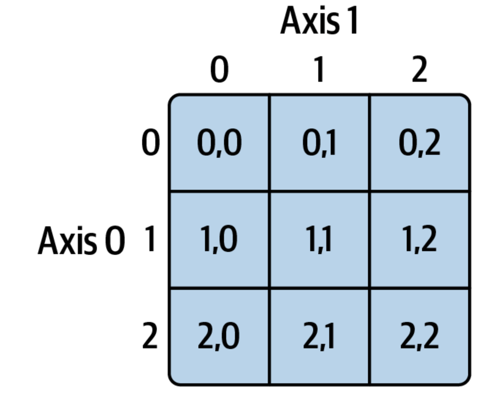

Day 4: Numpy, Pandas and APIs
Course Outline
Monday: Intro and Coding Basics
Tuesday: Basics Continued and Control Flow
Wednesday: Object Oriented Programming and Functions
Today: Comprehensions, Data Analysis and APIs
Friday: Web Scraping and Text-as-Data
Review Exercise 1 (Loops)
Consider the following data
Write a for loop using enumerate that prints each policy/budget combo.
Review Exercise 2 (Functions)
Write a function that, given a dictionary consisting of policies and their budgets in millions of dollars, constructs a list of the policy names with budgets below $100 million.
Use the following dictionary of policies
Return: Clarification
Note where the return statements are. In a for loop with print, we might print after number % 6 == 0, but if we did that here it would exit the function before checking whether the number is also divisible by 9!
You Try
Write a list comprehension that takes some list of numbers, and subtracts 5 from only the numbers that are divisible by 3.
Conditional Logic in Comprehensions
Suppose we have multiple conditions we want to evaluate. In a for loop we would use if, elif and else, but the syntax is a little different for comprehensions. Check out this more complicated syntax.
policies = ["Public Transit", "Education Funding", "SNAP Expansion", "Defense Procurement", "Reduce Emissions"]
budgets = [10, 50, 175, 850, 20] # in millions of dollars
classifications = [
f"{name}: " + (
"small" if budget < 25
else "medium" if budget < 100
else "large"
)
for name, budget in zip(policies, budgets)
]
print(classifications)['Public Transit: small', 'Education Funding: medium', 'SNAP Expansion: large', 'Defense Procurement: large', 'Reduce Emissions: small']Dictionary Comprehension Example
A very simple example would be to create a mapping of numbers to their squares
More Complex Dictionary Comprehensions
This should look familiar!
Review Exercise 2 Revisited
Write a function that, given a dictionary consisting of policies and their budgets in millions, constructs a dictionary of policies with budgets below $100 million. Use a comprehension to accomplish this!
Start with
Multidimensional Indexing Graphically

Multidimensional Slicing
If you want a lower dimensional slice, mix indexing and slicing
Random Number Generation
Numpy also provides us with efficient ways to generate arrays of random numbers. This is a good thing to know how to do!
Universal Functions
Universal Functions perform fast element-wise operations on data in numpy arrays. Similar to how R does fast operations over matrices.
We can make a simple 1d array of the numbers 1-10 like this
If we wanted to take the square root of every element in the array, we can do
Comparisons with Universal Functions
Suppose we wanted to compare two arrays and select the maximum value at each index.
More Universal Functions
There are a ton more universal functions, including useful utility functions like .isnan to check which elements have missing values
Refer to McKinney section 4.3 for a list of the most common/useful universal functions
Time for a break?
pandas
pandas is the most popular data analysis package in Python. It is not the only option — Polars, which has functionality similar to the tidyverse, is gaining popularity.
But pandas is still dominant. It is great for loading and cleaning data, as well as basic data analyses. Most advanced analyses packages, including machine learning packages like PyTorch and TensorFlow, build on pandas and numpy.
By convention, we import pandas as pd
Pandas Data Structures: Series
A Series is a one-dimensional array-like object containing a sequence of values of the same type and an associated array of data labels, called its index.
A basic Series might look something like this:
We can also access it in array style
Named Indices
You can give your indices meaningful labels
Will 88
Ben 75
Adam 95
Charlie 83
dtype: int64And we can use that index label to extract specific data points
Data Alignment
If you have two Series with matching labels, adding any operation matches labels rather than position
If you’ve worked with databases in SQL or tidyverse before, this is like a join where the index is the key.
We can also name the index to remind ourselves what it is
DataFrame
A data frame is a data object that contains an ordered, named, collection of columns. You can think of this as a dictionary of Series, each sharing the same index.
data = {'state': ['Ohio', 'Ohio', 'Ohio', 'Nevada', 'Nevada', 'Nevada'],
'year': [2000, 2001, 2002, 2001, 2002, 2003],
'pop': [1.5, 1.7, 3.6, 2.4, 2.9, 3.2]}
frame = pd.DataFrame(data)
frame| state | year | pop | |
|---|---|---|---|
| 0 | Ohio | 2000 | 1.5 |
| 1 | Ohio | 2001 | 1.7 |
| 2 | Ohio | 2002 | 3.6 |
| 3 | Nevada | 2001 | 2.4 |
| 4 | Nevada | 2002 | 2.9 |
| 5 | Nevada | 2003 | 3.2 |
DataFrame Methods
The head method displays only the first five rows
tail will do the same, but for the last five rows
Accessing Specific Columns
We can also look at specific columns
Creating a new Column
We have the year, state and population. What if we want to add a column with each state’s voter turnout?
We can create a new Series
I can also specify which index each entry in the Series corresponds to. Missing values will default to NaN
Filtering
Imagine we only want to consider cases with high turnout (above 0.5). Let’s re-append the original turnout data. Then we can take a conditional slice
Notice that the indices are retained from the original DataFrame object.
Updating Values
We can also use this logic to update values in the DataFrame. But be careful with syntax - you can easily end up editing all rows
Let’s try that again. I reinitialize the data behind the scenes. .loc lets you explicitly name which column you are updating
Some Indexing Pitfalls
If we use integers for our indices in series and dataframes, this can create some non-intuitive behavior. For example, this seems like it should work:
Since ser has specific integer indices, you cannot use positional indexing.
You can use iloc, which tells python to use integer indexing and ignore the index labels
However, if ser has character indices, negative integer indexing has historically worked as positional — but pandas’s behavior here has shifted over versions, so prefer .iloc for positional access.
Summarizing Data
Sometimes it’s useful to get some descriptives about our data. We can call .describe() on a dataframe to do that.
Correlation and Covariance
If we want the correlation between two columns, we can do the following
Or a covariance matrix between three columns
Loading Data
Most of the time, we won’t be creating our own DataFrame. Instead, we will load data from some other source.
The most common data type you will see is csv, although json and xml are common if you work with text data or APIs, and in the social sciences you will see spss, sav and other bespoke types.
pandas has its own functions for reading all of these — let’s load in some data using read_csv(). I’ll demonstrate in Colab.
Read_csv()
It’s a tad different in Colab, where we don’t need to think about the file path, but in general to load data, you need to know where it lives on your machine.
Generically, it looks something like this
As a specific example, I can load
Looking at the Data
| Unnamed: 0 | ID | state | attend_online | attend_meet | buttons_signs | donate | contact_congr | registered | party | ... | act_ineq | hist_discrim | econ_mobility | tax_rich | aca | vaccines | reg_emissions | background_checks | freetrade | minwage | |
|---|---|---|---|---|---|---|---|---|---|---|---|---|---|---|---|---|---|---|---|---|---|
| 0 | 1 | 200015 | 40.0 | No | No | No | No | No | NaN | 2.0 | ... | Favor a great deal | Agree Strongly | A great deal easier | Oppose | Disapprove | Neutral | Neutral | Disapprove | Approve | Same |
| 1 | 2 | 200022 | 16.0 | Yes | Yes | No | No | No | NaN | 4.0 | ... | Neutral | Disagree Somewhat | A great deal harder | Favor | Disapprove | Neutral | Neutral | Neutral | Neutral | Raised |
| 2 | 3 | 200039 | 51.0 | No | No | Yes | Yes | Yes | NaN | NaN | ... | Favor a moderate amount | Agree Strongly | A little harder | Favor | Approve | Approve | Approve | Approve | Neutral | Raised |
| 3 | 4 | 200046 | 6.0 | No | No | No | No | No | NaN | 2.0 | ... | Favor a moderate amount | Disagree Somewhat | A great deal harder | Favor | Approve | Approve | Approve | Approve | Approve | Same |
| 4 | 5 | 200053 | 8.0 | No | No | No | No | No | NaN | 4.0 | ... | Neutral | Agree somewhat | A great deal harder | Neutral | Neutral | Disapprove | Disapprove | Approve | Disapprove | Eliminated |
5 rows × 36 columns
Describing the Data
| Unnamed: 0 | ID | state | registered | party | ft_biden | ft_trump | ft_harris | ft_pence | ft_fauci | ft_scotus | ft_congress | ft_police | ft_science | ft_blm | limit_imports | |
|---|---|---|---|---|---|---|---|---|---|---|---|---|---|---|---|---|
| count | 7453.000000 | 7453.000000 | 7051.000000 | 625.000000 | 3970.000000 | 7375.000000 | 7359.000000 | 7347.000000 | 7362.000000 | 7293.000000 | 7367.000000 | 7355.000000 | 7388.000000 | 7367.000000 | 7344.000000 | 7244.000000 |
| mean | 3727.000000 | 336416.233061 | 28.084527 | 2.352000 | 2.084635 | 53.449220 | 38.258051 | 51.896965 | 45.277234 | 67.916084 | 60.658341 | 44.346975 | 70.574851 | 79.313832 | 53.295615 | 1.444644 |
| std | 2151.640111 | 103653.120687 | 15.736841 | 0.884844 | 1.220424 | 35.814618 | 40.092051 | 37.828472 | 37.295162 | 30.240530 | 21.831983 | 21.720761 | 25.125874 | 20.167552 | 35.431626 | 0.496961 |
| min | 1.000000 | 200015.000000 | 1.000000 | 1.000000 | 1.000000 | 0.000000 | 0.000000 | 0.000000 | 0.000000 | 0.000000 | 0.000000 | 0.000000 | 0.000000 | 0.000000 | 0.000000 | 1.000000 |
| 25% | 1864.000000 | 225427.000000 | 13.000000 | 1.000000 | 1.000000 | 15.000000 | 0.000000 | 10.000000 | 5.000000 | 50.000000 | 50.000000 | 30.000000 | 60.000000 | 70.000000 | 15.000000 | 1.000000 |
| 50% | 3727.000000 | 335416.000000 | 27.000000 | 3.000000 | 2.000000 | 60.000000 | 15.000000 | 60.000000 | 50.000000 | 70.000000 | 60.000000 | 50.000000 | 70.000000 | 85.000000 | 60.000000 | 1.000000 |
| 75% | 5590.000000 | 427865.000000 | 42.000000 | 3.000000 | 4.000000 | 85.000000 | 85.000000 | 85.000000 | 85.000000 | 100.000000 | 75.000000 | 60.000000 | 85.000000 | 100.000000 | 85.000000 | 2.000000 |
| max | 7453.000000 | 535469.000000 | 56.000000 | 3.000000 | 5.000000 | 100.000000 | 100.000000 | 100.000000 | 100.000000 | 100.000000 | 100.000000 | 100.000000 | 100.000000 | 100.000000 | 100.000000 | 2.000000 |
Frequency Tables
Basic Plotting
We can use matplotlib for all sorts of plotting in python. Analogous (but not quite as good, imo) to ggplot2 in R. I encourage you to mess around with it, using this data, on your time.
The McKinney book has a whole chapter on data visualization, which I recommend for future reading.
As a simple example, we can plot a histogram to see how Americans feel about the police.
Default Plots

A better Plot

Making the Plot Nicer
We can, of course, make this plot nicer

Plotting
I find matplotlib to be kind of clunky, particularly compared to ggplot in R. Fortunately, there are some packages that build on matplotlib and improve its functionality.
I would recommend:
Seaborn makes nice plots for a wide range of statistical models, is more aesthetically pleasing
plotly is great for interactive plots (also exists in R)
An Aside - Installing Packages
Since we have been working on Colab, we haven’t needed to install any packages. This is because Colab comes with many common packages already installed (although not always up-to-date).
Still, we might want to install other packages. There are several ways to do this, and many people use package managers such as Anaconda to manage package installation.
Recommendations vary based on your machine and use case, but in general !pip install package will install a package on Colab, and then you load using import
Time for a break?
Accessing Data from the Internet
Data (e.g. web pages) lives on servers
Browsers, apps, etc are clients
clients send requests to servers
servers serve the necessary files to the user
Requests library
The requests library allows us to send requests to servers. This requires us to be working on a machine connected to the internet (obviously).
Let’s see a very simple example
What’s in the Response?
What happens if you run this?
HTML Files
r.text returned the HTML code for the Python webpage, and it contains a ton of information.
style information, including links to CSS files
JavaScript scripts
HTML tags
classes, ids, toggle buttons, etc
navigation bars, sidebars, footers
Take Stock
Go to Wikipedia and load a page on a topic of your interest. What information is actually useful? What information is not worth obtaining?
We want methods for extracting useful, structured, data that we can use in analyses.
Parsing HTML Files
To parse an HTML document, we will need a parsing tool
- Software that recognizes the structure of HTML documents and allows us to extract what we want
beautifulsoupis a library that will allow us to do so- but that is a topic for tomorrow
Or, we need some other method to interact with the server and bypass this mess!
- so, let’s start with APIs
Requesting Structured Data with APIs
Why APIs?
Application Programming Interfaces (APIs) provide us access to structured data
Design is separate from content (unlike with an HTML file)
We can access the data directly
A needed detour
APIs most commonly return data in the JSON format, or occasionally in the XML format.
- Sometimes you can specify which format you prefer
To interact with APIs, we need to understand how the data that they return will be structured
- And how to manipulate it for our purposes
JSON Files
JSON (JavaScript Object Notation) files store structured data in a simple(ish) and human readable way.
In Python, we usually use the json module to interact with JSON files.
Very very (very) popular for exchanging data with servers, storing metadata along with data, etc.
JSON Structure
JSON files are built on two main data structures
a collection of name:value pairs
an ordered list of values
Natural way of storing
Lists
Dictionaries
Whether a JSON will be read in as a dictionary or a list depends on its content
If it has key:value pairs in it, we have a dictionary. If it has an array/list, we will have a list
Or, we can get complex data structures
A list of dictionaries
A dictionary where values are lists
Nested combinations of these things
Makes it very flexible/useful
- And sometimes painful to work with!
Example JSON
Notice that this contains a variety of data types, and some nesting. Much more free form/flexible than a .csv
Converting JSON to Python Objects
If we want to extract data into a DataFrame
APIs
APIs are a very useful way to get data. Many government agencies and other common data sources have public APIs that we can access from Python.
- Can access with R, but support for Python more robust
Sometimes you will need a key to access data, particularly if data is sensitive or non-public
Get Requests
When we want to get data from a server, we use a get request.
Requests typically start with an endpoint defined by the host (server). For example, English Wikipedia has the following endpoint:
https://en.wikipedia.org/w/api.php
Or if you want to access YouTube comments, it provides the following endpoint
https://www.googleapis.com/youtube/v3/channels
Parameters are usually formatted as follows:
?param1=value1¶m2=value2&...
Suppose we wanted to get some data from a (fake) website called example.com, and we want to get articles containing the word america, sorted by publication date. Depending on the API’s parameters and format, that might look like:
https://www.example.com/api/posts?query=america&sort=newest&types=articles
Possible parameters will vary across APIs, so always check the documentation
Usually the return will be JSON, sometimes it will be XML or other
JSON is easiest to work with, especially in Python, so if you have a choice…
&format=jsonwill often return JSON
Your Turn!
check the documentation at https://en.wikipedia.org/w/api.php
Find information on the Wikipedia page for “Jimmy Carter”
Let’s do a quick example together, returning the number of other language versions
- return as JSON
Parameters example
We can also use requests to make our code more readable, and avoid typos and formatting mistakes in the get request.
Quick Dictionary Conversion
Another example
Try this — how would you extract the relevant data?
Continue
We should always check whether the API returned everything we asked for. Often, there are limits to how much data a single query can return, and we may need to send back a continue code to get the API to send the next batch. Here we check whether continue is among the keys returned:
import requests
API_URL = "https://en.wikipedia.org/w/api.php"
# only the first batch, no loop yet
params = {
"action": "query",
"list": "categorymembers",
"cmtitle":"Category:Wikipedians_interested_in_history",
"cmlimit":"50",
"format": "json"
}
resp = requests.get(API_URL, params=params)
resp.raise_for_status() # raises an exception for HTTP error codes (4xx, 5xx)
data = resp.json()
# show what came back
print("Top‐level keys:", list(data.keys()))While Loops for Continue
all_members = []
while True:
resp = requests.get(API_URL, params=params)
resp.raise_for_status()
data = resp.json()
batch = data["query"]["categorymembers"]
all_members.extend(batch)
print(f"Fetched {len(batch)} items (total so far: {len(all_members)})") ## Keep track of how many items returned
if "continue" in data:
params.update(data["continue"])
else:
break
print(f"\nDone! Total pages fetched: {len(all_members)}")Pulling From Multiple Pages
Tomorrow
Tomorrow — Web scraping with BeautifulSoup, plus text-as-data basics
Questions: come to office hours (10 AM – 12 PM daily), or email me
Recommended reading: links to web-scraping and text-as-data resources will be posted on Canvas
Slides will be posted after class on Canvas and at will-horne.github.io/icpsr-2026
Social Science Data and APIs
While I can imagine fascinating research projects using this Wikipedia data, such as looking at revision histories to controversial topics, or edits in response to political shifts, most of the time we are looking to grab more traditional data from APIs.
Let’s take a look at the API for the OECD by going to
https://data-explorer.oecd.org
Formatting info is here:
https://www.oecd.org/en/data/insights/data-explainers/2024/09/api.html